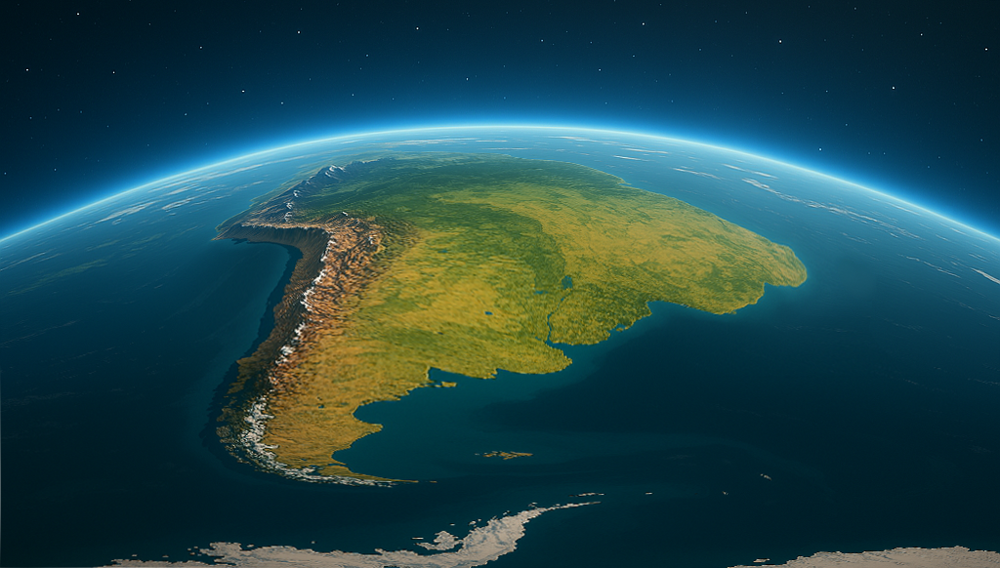

La Cultura de Argentina
Introducción a Argentina
Argentina, oficialmente la República Argentina, es un país ubicado en el extremo sur de América del Sur. Con una rica herencia cultural derivada de sus raíces indígenas y de la inmigración europea, Argentina ofrece una fascinante mezcla de tradiciones y costumbres.
El país ocupa un vasto territorio que abarca desde la cordillera de los Andes hasta el océano Atlántico, y desde la selva subtropical del norte hasta los helados paisajes de la Patagonia en el sur.
Historia y Patrimonio Cultural
La historia de Argentina es rica y compleja, desde las culturas precolombinas hasta su independencia en 1816 y su desarrollo como nación moderna. Los pueblos originarios como los Mapuches, Guaraníes y Diaguitas dejaron un importante legado cultural.
Durante el siglo XIX y principios del XX, Argentina recibió grandes oleadas de inmigrantes, principalmente de Italia y España, que contribuyeron significativamente a la formación de la identidad nacional argentina.Momentos Históricos Clave:
- 25 de Mayo de 1810: Revolución de Mayo
- 9 de Julio de 1816: Declaración de la Independencia
- 1880-1930: La "época dorada" de Argentina
- 1946-1955 y 1973-1974: Períodos del peronismo
- 1976-1983: Dictadura militar
- 1983 hasta la actualidad: Retorno a la democracia
Himno Nacional Argentino:
El Himno Nacional Argentino es una de las composiciones patrióticas más emblemáticas del país. Su letra fue escrita por Vicente López y Planes y la música fue compuesta por Blas Parera en 1812.
Uno de los datos curiosos más destacados es que en sus primeros años fue denominado "Marcha Patriótica", luego "Canción Patriótica Nacional" y finalmente "Himno Nacional Argentino" a partir de 1847.
Gastronomía Argentina
La comida argentina refleja la influencia de diversas culturas, especialmente la italiana y española. Entre sus platos más emblemáticos destacan:
Platos Típicos:
- Asado: El asado argentino es mundialmente famoso. Consiste en diversos cortes de carne vacuna a la parrilla.
- Empanadas: Pasteles rellenos de carne, pollo, jamón y queso, o vegetales.
- Locro: Guiso a base de maíz, porotos, zapallo y carne.
- Dulce de leche: Dulce tradicional usado en postres como alfajores y panqueques.
- Mate: Infusión tradicional consumida socialmente en un recipiente llamado "mate" y con una bombilla.

Música y Danza
Las expresiones musicales y dancísticas de Argentina son diversas y ricas, con el tango como su máximo exponente internacional.
Géneros Musicales:
- Tango: Nacido en los arrabales de Buenos Aires a finales del siglo XIX, el tango es patrimonio cultural inmaterial de la humanidad. Figuras como Carlos Gardel y Astor Piazzolla son referentes mundiales.
- Folklore: Incluye chacareras, zambas, gatos y otras danzas tradicionales. Mercedes Sosa y Atahualpa Yupanqui son exponentes legendarios.
- Cuarteto: Género musical festivo originario de Córdoba.
- Rock Nacional: Con figuras como Charly García, Luis Alberto Spinetta y Gustavo Cerati.
El baile es parte fundamental de estas expresiones, tanto en las milongas donde se baila tango como en las peñas folklóricas.

Literatura Argentina
Argentina ha dado al mundo grandes escritores cuyas obras son reconocidas internacionalmente:
- Jorge Luis Borges: Maestro del realismo mágico y los cuentos filosóficos.
- Julio Cortázar: Innovador en técnicas narrativas y autor de "Rayuela".
- Ernesto Sábato: Autor de "El túnel" y "Sobre héroes y tumbas".
- Manuel Puig: Con obras como "El beso de la mujer araña".
- Roberto Arlt: Cronista de la vida urbana de Buenos Aires.
- Alfonsina Storni: Una de las poetas más importantes de Latinoamérica.
La literatura argentina se caracteriza por su innovación, profundidad filosófica y su reflejo de la identidad nacional.
Tradiciones y Costumbres
Las tradiciones argentinas combinan elementos europeos, indígenas y criollos:
- La figura del gaucho: El hombre de campo, símbolo de la tradición rural argentina.
- El mate: Más que una bebida, es un ritual social que representa la hospitalidad.
- Reuniones familiares: Los domingos son típicamente días de reunión familiar, generalmente alrededor de un asado.
- Fiestas tradicionales: Como la Fiesta Nacional de la Vendimia en Mendoza o la Fiesta Nacional del Poncho en Catamarca.
- La vida nocturna: En las grandes ciudades, especialmente Buenos Aires, la vida social comienza tarde, con cenas a partir de las 21:00 y salidas nocturnas que pueden extenderse hasta la madrugada.

Deportes Argentinos
El deporte forma una parte fundamental de la cultura argentina:
- Fútbol: Es el deporte nacional por excelencia. Argentina ha ganado la Copa Mundial de la FIFA en 1978, 1986 y 2022, y ha producido jugadores legendarios como Diego Maradona y Lionel Messi.
- Polo: Argentina tiene los mejores jugadores del mundo y es una potencia en este deporte.
- Pato: El deporte nacional oficial, que combina elementos del polo y el baloncesto.
- Tenis: Con figuras destacadas como Guillermo Vilas, Gabriela Sabatini, Juan Martín del Potro y Diego Schwartzman.
- Rugby: Los "Pumas" (selección nacional) han ganado reconocimiento internacional.
- Hockey sobre césped: El equipo femenino, conocido como "Las Leonas", es uno de los más exitosos del mundo.

Lugares Turísticos Destacados
Argentina ofrece una gran variedad de destinos turísticos debido a su diversa geografía:
- Buenos Aires: La capital, conocida por su arquitectura europea, teatros, milongas y barrios emblemáticos como La Boca y San Telmo.
- Cataratas del Iguazú: Una de las Siete Maravillas Naturales del Mundo, en la provincia de Misiones.
- Glaciar Perito Moreno: Ubicado en El Calafate, provincia de Santa Cruz, es uno de los pocos glaciares en avance.
- Mendoza: Famosa por sus viñedos y la producción de vino Malbec.
- Bariloche: Ciudad andina conocida por sus paisajes alpinos, lagos y estaciones de esquí.
- Quebrada de Humahuaca: Valle pintoresco en Jujuy, declarado Patrimonio de la Humanidad por la UNESCO.
- Ushuaia: La ciudad más austral del mundo, punto de partida para expediciones a la Antártida.